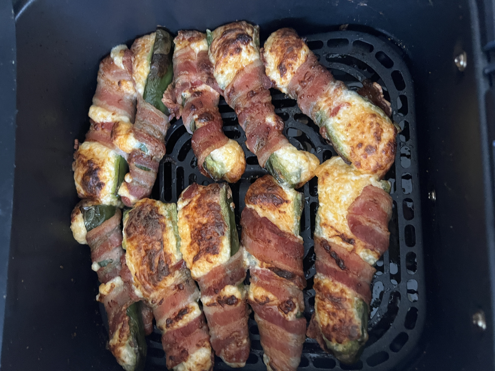

One of my favorite hobbies is cooking. Here is a picture of some jalapeno poppers I made recently. This was my first attempt at making jalapeno poppers. I began by washing by peppers, cutting off the stems, and slicing them in half. I used a spoon to remove the ribs and seeds, I left a few of the seeds in there for heat, but other recipes would recommend removing them all. I took 8oz of cream cheese, and I let it sit on the counter for 10 minutes to let it soften. After it was softened, I mixed 6oz of shredded cheddar cheese. I would also recommend mixing in additional spices, such as black pepper or paprika to give the jalapeno poppers additional flavor, but this step is optional. After I mixed the shredded cheese and the cream cheese I stuffed the jalapeno peppers with the cheese mix. I took a slice of bacon, and stretched it out a bit before wrapping the pepper completely with a strip of bacon. It is important to stretch the baocn or else it will not cover the pepper completely. I set an air fryer to 375 degrees, and I cooked my peppers for 10 minutes until the cheese was melted and the bacon was crispy.
Ingredients for jalapeno poppers